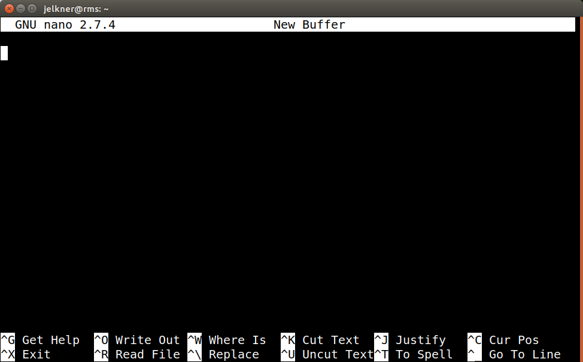
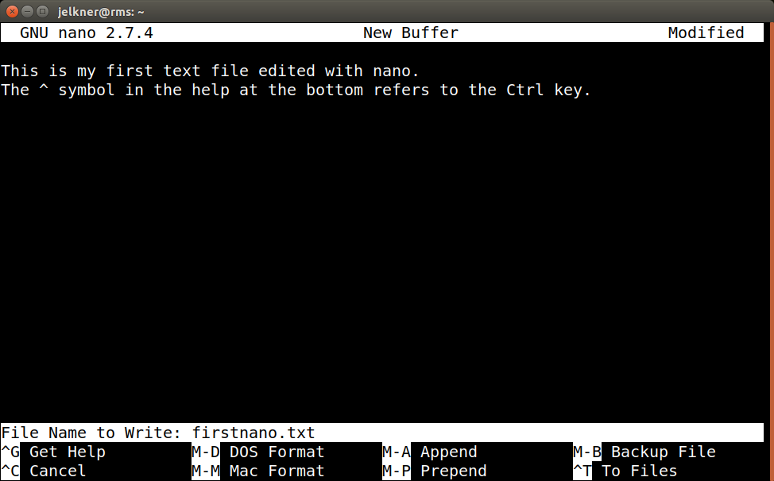

Text files are files in our file system that contain only plain text. Plain text represents characters without any information about their appearance, such as whether they are bold, centered, in a fancy font, and so forth. Plain text files do not contain this information, just the characters of the plain text itself. The source files of web pages and computer programs are examples of common files which are written in plain text.
The basic operations we need to perform in working with text files include creating, viewing, modifying and deleting them. We will learn to delete files in the next lesson. In this lesson we are going to learn to create, view, and modify them, a process referred to as editing the file. A program called a text editor is designed specifically for the purpose of editing text.
GNU nano is a simple, easy
to use command line text editor. To start nano, type nano at the
unix command prompt:
$ nano
The program will load and you will see a screen that looks like this:

The bottom two lines of the screen provide help on using nano. The
^ character represents the control key (usually marked with
Ctrl) on your keyboard. Even though the letters that follow the
^ character appear as capital letters, you do not use the shift
key when typing them.
Write Out
in nano means to save the text inside the nano screen to a
file. The following screen shot shows what the nano screen looks like
after the user has pressed Ctrl+o (hold down the Ctrl
while pressing the o key - this is what ^O represents
in the help at the bottom) and is about to write out two lines of text to a
file named firstnano.txt:

Pressing the Enter key will now save (write out) the file.
Pressing Ctrl+x will now exit nano. Nano has many other features,
many of which you can read about it the How-To Geek blog post,
The Beginner’s Guide to Nano, the Linux
Command-Line Text Editor. You will be introduced to the much more powerful
vim editor in a few lessons, however, so we will only need the most basic
commands here.
$ nano word.txtThis will create the text file,
word.txt, in a nano edit
session. Add the following text to the file:
loveSave the file and exit nano. Run the
ls command and confirm that
you see word.txt among the listing.$ nano fruits.txtAdd the following text to the file:
apples, bananas, grapes, oranges, pears, and strawberriesSave the file and exit nano. Type the following at the unix command prompt:
$ ls -lYou should see one line that looks something like this:
-rw-rw-r-- 1 username username 58 Sep 28 22:16 fruits.txtThe
58 after the owner and group name is the size of the file
in bytes. Since each
character is one byte, this file has 58 characters. You'll only count 57.
The last one is the invisible
end of file character. Confirm that the word.txt file
you created in the previous exercise has size 5.
hello.html with the following
contents:
<!DOCTYPE html> <html lang="en"> <head> <meta charset="utf-8"> <title>Hello World!</title> </head> <body> <h1>Hello World!</h1> </body> </html>
$ nano fruitlist.txtto see its contents.